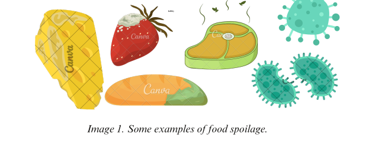
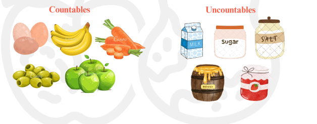
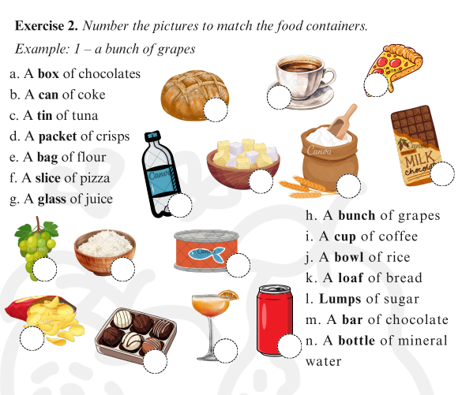
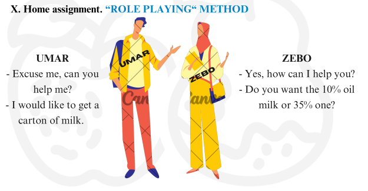

I. Pre reading task. Ask the following questions from students. Use the images to
prompt to get ideas.
1. What kinds of food spoilage do you know? 2. What can cause food spoilage?
IV. Reading task. Read the passage for overall understanding.
Microbiology means “micro”-small - “bio”-life. It deals with the relationship of microorganisms with the external environment and its development. Food microbiology studies microorganisms in food products, their safety and quality. It includes the identification, isolation, and characterization of microorganisms in foods, as well as the study of their growth, metabolism, and interactions with food and the environment. Food products consumed by humans can be of animal and vegetable origin. In this regard, it becomes possible to predict the general types of microorganisms that can multiply in them. During the processing and storage of plant and animal raw materials, there is an increase or decrease in the number of microorganisms originally present in it. Any vital activity of microorganisms in food raw materials and products of its processing leads to a change in their chemical and physical composition. If the multiplying microorganisms cause the degradation of nutrients, then microbial metabolism is called spoilage. Particular attention should be paid to microorganisms that cause foodborne infections and poisoning. If sanitary and hygienic requirements are violated, they can multiply in most products and accumulate toxic metabolic products. The rate of reproduction of microorganisms in food products is influenced by the structure and consistency, chemical composition, water activity and pH values, the presence of antimicrobial substances, the composition of the gas environment, humidity, temperature, technological parameters, etc.
V. Reading comprehension. Answer the questions based on the passage.
1. What does food microbiology study?
2. Explain the process of spoilage. How does it happen?
3. What are the factors influencing the reproduction of microorganisms?
4. What requirements should be followed to avoid toxic metabolic products?
VI. Grammar. Countable and uncountable nouns. In English grammar, countable nouns are individual people, animals, places, things, or ideas which can be counted. Uncountable nouns are not individual objects, so they cannot be counted
We cannot count some nouns (uncountable nouns). They do not have a plural form and take a singular verb, even if they end in -s. Some uncountable nouns: Example: bread, fruit, rice, water,Do not keep bread for a long time. salt, cereal, flour, juice,Bags of flour are transported to the shop. meat, cheese Water is vital to survive in desert. Countable nouns have a singular and a plural form and take a singular or plural verb. Countable nounsExample Apple/applesThere were 20 apples on the market stall. Cherry / cherriesThese cherries are rotten and can`t be eaten. Tomato / tomatoesThe tomatoes I bought the day before are spoiled now. food microbiology A few countable nouns have irregular plurals. They include: One child - two childrenOne person – two people One foot – two feet / One tooth, two teeth One man – two men / One woman – two women
VII. Classroom activity. “STORY WRITERS“ METHOD
Divide the students into 4 groups and ask them to write 2 sentences about a photo you have hung on the whiteboard in advance. Give them two minutes to complete sentences and hand in their sheets to the group on their right. Group members are asked to continue the partner groups sentences in next 2 minutes. Sheets cycle until the groups get their original ones. The winner is the one who could write the most interesting story with topic related vocabulary.
VIII. Grammar revision.
Exercise 1. Fill in the gaps with the correct auxiliary verbs.
1. Meat______ a complete nutrient medium for the vital activity.
2. Bacteria ______ commonly found on fresh meat.
3. Various microorganisms______ able to cause undesirable changes.
4. Fermented milk______ a semi-finished product of the industry.
5. Starch ______ stored in a warehouse where the relative humidity is 75% and the temperature does not exceed 20°C.
6. Natural honey ______a product with high nutritional value, aromatic, pleasant, sweet taste.
7. Apples ______a common seed fruit.
8. Pears _____ sweet tasted fruits.
Exercise 2. Number the pictures to match the food containers.
The tasks of food microbiology are: - the study of raw 1. ______ used in the food industry; - microbiological control of the technological process; - 2. ______ and microbiological control of finished products; - obtaining and using highly active industrial 3. ______ of microorganisms; intensification of technological processes based on their 4. ______ activity;
Exercise 2:
Fill in the blanks with the appropriate term from the word bank
1. ___ occurs when microorganisms such as bacteria, yeast, or molds break down food components.
2. ___spoilage may result from improper handling or packaging, causing changes like bruising or mechanical damage.
3. Exposure to air or light can lead to ___spoilage of food products.
4. ___are microscopic organisms that can cause foodborne illnesses or spoilage.
5. ___are single-celled fungi commonly used in fermentation processes.
6. __ are multi-cellular fungi that grow in thread-like structures called hyphae.
7. ___are natural substances in food that can initiate or accelerate biochemical reactions.
8. __such as cockroaches or rodents can infest and contaminate food supplies.
9. ___like flies or beetles can also contribute to food spoilage through contamination.
1. There are mainly three types of causes of food spoilage viz. biological, chemical and physical causes. Biological causes comprise of growth and activity of microorganisms such as bacteria, yeast and molds; activity of food enzymes and damage due to pests, insects and rodents etc. 2. 2. There are many factors which can be the reasons for food unsuitable for consuming. Light, oxygen, heat, humidity, temperature and spoilage bacteria can all affect both safety and quality of perishable foods. When subject to these factors, foods will gradually deteriorate.
II. Word bank.
Read and match the translation of the words.
1–e 2–j 3–a 4–b 5–i 6 – c 7 – d 8 – f 9 – g 10 – h
V. Reading comprehension. Answer the questions based on the passage.
1. Food microbiology studies microorganisms in food products, their safety and quality. It includes the identification, isolation, and characterization of microorganisms in foods, as well as the study of their growth, metabolism, and interactions with food and the environment.
2. During the processing and storage of plant and animal raw materials, there is an increase or decrease in the number of microorganisms originally present in it. Any vital activity of microorganisms in food raw materials and products of its processing leads to a change in their chemical and physical composition. If the multiplying microorganisms cause the degradation of nutrients, then microbial metabolism is called spoilage.
3. The rate of reproduction of microorganisms in food products is influenced by the structure and consistency, chemical composition, water activity and pH values, the presence of antimicrobial substances, the composition of the gas environment, humidity, temperature, technological parameters, etc.
4. If sanitary and hygienic requirements are violated, they can multiply in most products and accumulate toxic metabolic products.
VII Grammar revision.
IX. Listening task 2. food microbiology
Track 8. Listen to audio and fill in gaps. The tasks of food microbiology are: - the study of raw materials used in the food industry; - microbiological control of the technological process; - sanitary and microbiological control of finished products; - obtaining and using highly active industrial strains of microorganisms; intensification of technological processes based on their vital activity;
- I can make up sentences from the words in the unit.
- I can understand and write a summary for the text.
- I can use the grammar topic
- I can speak about the text I listened to
1. What kinds of food spoilage do you know? 2. What can cause food spoilage?

II. Word bank. Read and match the translation of the words.
| 1. Biological spoilage | e) biologik buzilish |
| 2. Physical spoilage | j) jismoniy buzilish |
| 3. Chemical spoilage | a) kimyoviy buzilish |
| 4. Bacteria | b) bakteriyalar |
| 5. Yeast | i) xamirturush, achitqi |
| 6. Molds | c) mog`or |
| 7. Food enzymes | d) oziq-ovqat fermentlari |
| 8. Pests | f) zararkunandalar |
| 9. Insects | g) hasharotlar |
| 10. Rodents | h) kemiruvchilar |
III. Listening task 1. Track 7.Listen to the passage in reading task.
IV. Reading task. Read the passage for overall understanding.
Microbiology means “micro”-small - “bio”-life. It deals with the relationship of microorganisms with the external environment and its development. Food microbiology studies microorganisms in food products, their safety and quality. It includes the identification, isolation, and characterization of microorganisms in foods, as well as the study of their growth, metabolism, and interactions with food and the environment. Food products consumed by humans can be of animal and vegetable origin. In this regard, it becomes possible to predict the general types of microorganisms that can multiply in them. During the processing and storage of plant and animal raw materials, there is an increase or decrease in the number of microorganisms originally present in it. Any vital activity of microorganisms in food raw materials and products of its processing leads to a change in their chemical and physical composition. If the multiplying microorganisms cause the degradation of nutrients, then microbial metabolism is called spoilage. Particular attention should be paid to microorganisms that cause foodborne infections and poisoning. If sanitary and hygienic requirements are violated, they can multiply in most products and accumulate toxic metabolic products. The rate of reproduction of microorganisms in food products is influenced by the structure and consistency, chemical composition, water activity and pH values, the presence of antimicrobial substances, the composition of the gas environment, humidity, temperature, technological parameters, etc.
V. Reading comprehension. Answer the questions based on the passage.
1. What does food microbiology study?
2. Explain the process of spoilage. How does it happen?
3. What are the factors influencing the reproduction of microorganisms?
4. What requirements should be followed to avoid toxic metabolic products?
VI. Grammar. Countable and uncountable nouns. In English grammar, countable nouns are individual people, animals, places, things, or ideas which can be counted. Uncountable nouns are not individual objects, so they cannot be counted
We cannot count some nouns (uncountable nouns). They do not have a plural form and take a singular verb, even if they end in -s. Some uncountable nouns: Example: bread, fruit, rice, water,Do not keep bread for a long time. salt, cereal, flour, juice,Bags of flour are transported to the shop. meat, cheese Water is vital to survive in desert. Countable nouns have a singular and a plural form and take a singular or plural verb. Countable nounsExample Apple/applesThere were 20 apples on the market stall. Cherry / cherriesThese cherries are rotten and can`t be eaten. Tomato / tomatoesThe tomatoes I bought the day before are spoiled now. food microbiology A few countable nouns have irregular plurals. They include: One child - two childrenOne person – two people One foot – two feet / One tooth, two teeth One man – two men / One woman – two women
VII. Classroom activity. “STORY WRITERS“ METHOD
Divide the students into 4 groups and ask them to write 2 sentences about a photo you have hung on the whiteboard in advance. Give them two minutes to complete sentences and hand in their sheets to the group on their right. Group members are asked to continue the partner groups sentences in next 2 minutes. Sheets cycle until the groups get their original ones. The winner is the one who could write the most interesting story with topic related vocabulary.

VIII. Grammar revision.
Exercise 1. Fill in the gaps with the correct auxiliary verbs.
1. Meat______ a complete nutrient medium for the vital activity.
2. Bacteria ______ commonly found on fresh meat.
3. Various microorganisms______ able to cause undesirable changes.
4. Fermented milk______ a semi-finished product of the industry.
5. Starch ______ stored in a warehouse where the relative humidity is 75% and the temperature does not exceed 20°C.
6. Natural honey ______a product with high nutritional value, aromatic, pleasant, sweet taste.
7. Apples ______a common seed fruit.
8. Pears _____ sweet tasted fruits.
Exercise 2. Number the pictures to match the food containers.

IX. Listening task 2. Track 8. Listen to the audio and fill in gaps.
The tasks of food microbiology are: - the study of raw 1. ______ used in the food industry; - microbiological control of the technological process; - 2. ______ and microbiological control of finished products; - obtaining and using highly active industrial 3. ______ of microorganisms; intensification of technological processes based on their 4. ______ activity;
Exercise 2:
Fill in the blanks with the appropriate term from the word bank
1. ___ occurs when microorganisms such as bacteria, yeast, or molds break down food components.
2. ___spoilage may result from improper handling or packaging, causing changes like bruising or mechanical damage.
3. Exposure to air or light can lead to ___spoilage of food products.
4. ___are microscopic organisms that can cause foodborne illnesses or spoilage.
5. ___are single-celled fungi commonly used in fermentation processes.
6. __ are multi-cellular fungi that grow in thread-like structures called hyphae.
7. ___are natural substances in food that can initiate or accelerate biochemical reactions.
8. __such as cockroaches or rodents can infest and contaminate food supplies.
9. ___like flies or beetles can also contribute to food spoilage through contamination.

ANSWER`S KEY
I. Pre reading task.1. There are mainly three types of causes of food spoilage viz. biological, chemical and physical causes. Biological causes comprise of growth and activity of microorganisms such as bacteria, yeast and molds; activity of food enzymes and damage due to pests, insects and rodents etc. 2. 2. There are many factors which can be the reasons for food unsuitable for consuming. Light, oxygen, heat, humidity, temperature and spoilage bacteria can all affect both safety and quality of perishable foods. When subject to these factors, foods will gradually deteriorate.
II. Word bank.
Read and match the translation of the words.
1–e 2–j 3–a 4–b 5–i 6 – c 7 – d 8 – f 9 – g 10 – h
V. Reading comprehension. Answer the questions based on the passage.
1. Food microbiology studies microorganisms in food products, their safety and quality. It includes the identification, isolation, and characterization of microorganisms in foods, as well as the study of their growth, metabolism, and interactions with food and the environment.
2. During the processing and storage of plant and animal raw materials, there is an increase or decrease in the number of microorganisms originally present in it. Any vital activity of microorganisms in food raw materials and products of its processing leads to a change in their chemical and physical composition. If the multiplying microorganisms cause the degradation of nutrients, then microbial metabolism is called spoilage.
3. The rate of reproduction of microorganisms in food products is influenced by the structure and consistency, chemical composition, water activity and pH values, the presence of antimicrobial substances, the composition of the gas environment, humidity, temperature, technological parameters, etc.
4. If sanitary and hygienic requirements are violated, they can multiply in most products and accumulate toxic metabolic products.
VII Grammar revision.
Exercise 1.
Fill in the gaps with the correct auxiliary verbs to complete sentences. 1. is 2. are 3. Are 4. is 5. is 6. is 7. are 8. areExercise 2.
Number the pictures to match the food containers. 1. a bunch of grapes8. a box of chocolates 2. a cup of coffee9. a can of coke 3. a bowl of rice10. a tin of tuna 4. a loaf of bread11. a packet of crisps 5. a lumps of sugar12. a bag of flour 6. a bar of chocolate13. a slice of pizza 7. a bottle of mineral water 14. a glass of juiceIX. Listening task 2. food microbiology
Track 8. Listen to audio and fill in gaps. The tasks of food microbiology are: - the study of raw materials used in the food industry; - microbiological control of the technological process; - sanitary and microbiological control of finished products; - obtaining and using highly active industrial strains of microorganisms; intensification of technological processes based on their vital activity;
"CAN DO” list
Tick the things you can do after the lesson.- I can make up sentences from the words in the unit.
- I can understand and write a summary for the text.
- I can use the grammar topic
- I can speak about the text I listened to